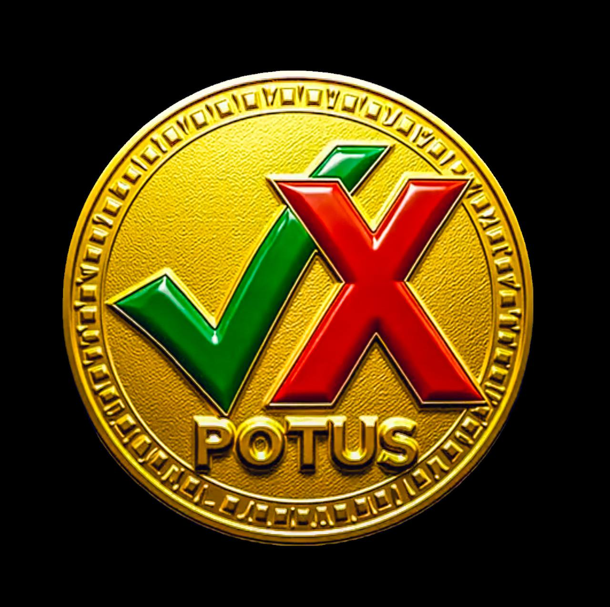

POTUS Coin ($POTUS) is a meme coin that tracks real-time presidential approval ratings through blockchain technology.
The system uses two tokens: $YES (Approval) and $NO (Disapproval) to reflect the sentiment of the people.